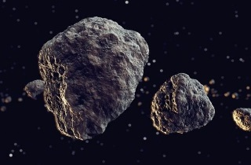

Астероидите са скални фрагменти, останали след формирането на Слънчевата система. Повечето от
тези древни космически отломки, някои от които са наречени от учените малки планети, са разположени
на орбити около Слънцето в пояс около Марс и Юпитер. Този регион в Слънчевата система, наречен
Астероиден пояс или Главен пояс, съдържа милиони астероиди.
Астероидите са били наблюдавани с телескоп за първи път през 1800 година. Астрономът Уилям Хершел
първи използва думата "астероид", която от гръцки означава "подобен на звезда", за тези небесни
тела. Повечето, което сме научили за астероидите през следващите 200 години, е основно от
телескопични наблюдения. Телескопите на Земята са използват за наблюдение на астероидите с
близки до Земята орбити, не само за откриване на нови, но също и за откриване на такива,
чиято орбита може да го доведе до сблъсък със Земята в бъдеще. Учените дефинират, че близките
до Земята астероиди са тези, чиято орбита не е по-далеч от 195 млн.км. от Слънцето.
До 1998 г. процесът по откриване на нов астероид се състои от четири стъпки. Първо, даден отсек
от небето се фотографира с широкоъгълен телескоп на два пъти в рамките на около един час. Второ,
двете снимки се наблюдават през стереоскоп. По този начин всяко тяло, което е на орбита около
Слънцето, „изпъква“ спрямо фона на звездите. Веднъж идентифициран, положението на обекта спрямо
известни обекти се измерва с точност с помощта на микроскоп. Тези три стъпки не се считат за
истинско откриване на астероида. Наблюдавано е само едно явление на обекта, който получава
предварително означение, състоящо се от годината на откриване, двубуквен код на седмицата на
откриване и пореден номер, ако повече от един обект е открит в рамките на една седмица .
Последната стъпка се състои в изпращането на координатите и времето на наблюдението в Центъра
за малки планети. С помощта на компютърна програма се проверява дали обектът е бил преди това
наблюдаван от някой друг на същата орбита. В този случай обектът получава официален номер и
последният наблюдател получава правото да наименува астероида след одобрението на името от
Международния астрономически съюз.
До 1998 г. процесът по откриване на нов астероид се състои от четири стъпки. Първо, даден отсек
от небето се фотографира с широкоъгълен телескоп на два пъти в рамките на около един час. Второ,
двете снимки се наблюдават през стереоскоп. По този начин всяко тяло, което е на орбита около
Слънцето, „изпъква“ спрямо фона на звездите. Веднъж идентифициран, положението на обекта спрямо
известни обекти се измерва с точност с помощта на микроскоп. Тези три стъпки не се считат за
истинско откриване на астероида. Наблюдавано е само едно явление на обекта, който получава
предварително означение, състоящо се от годината на откриване, двубуквен код на седмицата на
откриване и пореден номер, ако повече от един обект е открит в рамките на една седмица .
Последната стъпка се състои в изпращането на координатите и времето на наблюдението в Центъра
за малки планети. С помощта на компютърна програма се проверява дали обектът е бил преди това
наблюдаван от някой друг на същата орбита. В този случай обектът получава официален номер и
последният наблюдател получава правото да наименува астероида след одобрението на името от
Международния астрономически съюз.